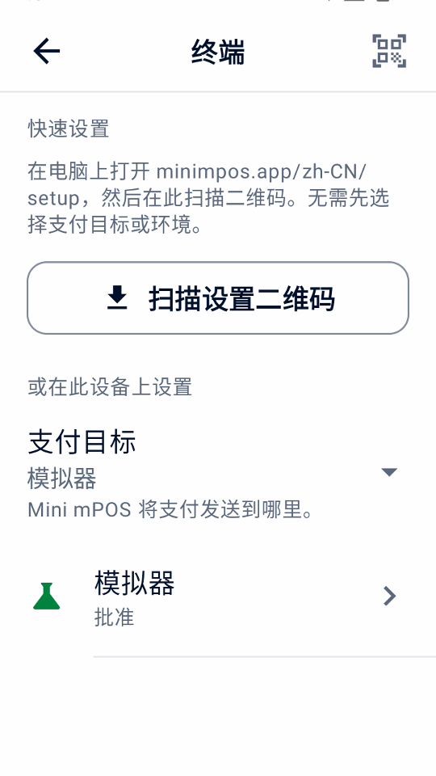

检查前提条件
请在安装当天之前确认以下内容。设备运行 Mini mPOS，终端读取银行卡；两者可以是同一台设备。
选择设备配置
- 在 Adyen 终端上运行
- 一台设备完成整个收银流程。需要 Android 9 或更高版本的 Adyen Android 支付终端。当前型号请参阅 Adyen Android 终端指南。
- 平板或手机搭配网络终端
- 柜台推荐方式。Android 9+ 平板或手机与 Adyen 终端位于同一局域网。终端上无需安装 Mini mPOS。
- 平板或手机搭配云端终端
- 适用于位于不同网络的设备和终端。两者都需要互联网连接，付款通过 Adyen 发送到终端。
- 在手机上使用 Tap to Pay
- 无需独立终端。使用支持近场通信（NFC）的手机和 Adyen Payments 应用，并由 Adyen 支持团队开通。请检查 Adyen 手机要求 与 Adyen 支持的国家和付款方式。
比较配置
| 配置 | 连接 | 收据 | 功能限制 |
|---|---|---|---|
| 在 Adyen 终端上运行 | 互联网及终端内部的本地连接 | 内置打印机或邮件 | 可配置本地离线处理；不提供独立顾客屏幕。 |
| 平板或手机搭配网络终端 | 同一网络的 TCP 8443；互联网 | 终端打印机、邮件或分享 | 支持独立顾客屏幕；可配置本地离线处理。 |
| 平板或手机搭配云端终端 | 两台设备均需互联网 | 终端打印机、邮件或分享 | 支持独立顾客屏幕；云端路由不提供离线处理。 |
| 在手机上使用 Tap to Pay | 互联网；兼容 NFC 手机 | 邮件或分享；无打印机 | 不支持终端小费、顾客屏幕、MOTO/MKE、离线处理或终端对账。 |
终端功能取决于机型、支付方式及 Adyen 配置。请测试所需流程。 检查 Adyen 功能.
- 打印需要内置打印机的终端。如果没有打印机，可改为发送电子收据或分享收据。
- 扫描条形码、退款二维码或设置二维码需要摄像头。
准备网络
请门店的网络管理员放行以下连接：
- 互联网
- 允许设备和终端通过 TCP 443 向
*.adyen.com和*.adyenpayments.com发起 HTTPS 出站连接。请 按域名放行，而不是按 IP 地址，因为 Adyen 的 IP 地址会变化。 - 局域网（适用于网络终端）
- 平板或手机必须能通过 TCP 8443 访问终端的 IP 地址。请将两者连接到同一网络，并确保 Wi-Fi 购物者端隔离（访客网络常见）不会隔开它们。
- 电子收据（可选）
- 允许出站访问您的 SMTP 服务器，通常为 TCP 587（STARTTLS）或 465（SSL/TLS）。
请在路由器中为每台网络终端设置 DHCP 保留，固定其 IP 地址。云端和 Tap to Pay 配置中的平板或手机可使用移动数据，但搭配网络终端时不行。终端本身的网络要求请参阅 Adyen 网络配置指南。
准备 Adyen 凭据
通过 Adyen 验证配置需要有效的测试商家账户、已开通的线下付款服务及商户后台（商户后台）访问权限。先使用 TEST 凭据及 TEST 终端或 Adyen Payments Test。上线时改用对应的 LIVE 账户、凭据及终端或 Payments 应用。
创建或编辑凭据时，商户后台用户需有 Manage API credentials 或 Merchant admin 权限。这些是用户权限，不是 API 密钥的角色。
请按照 Adyen 支付方式设置指南开通计划接受的 POS 支付方式。Mini mPOS 使用终端已配置的支付方式。
- 在商户后台进入 Developers › API credentials，为 Mini mPOS 创建凭据并生成 API 密钥；参见 Adyen API 凭据指南。
- 为主 API 密钥启用以下额外角色：
- Management API - Terminal actions read
- Management API - Terminal settings read and write
- Management API - Terminal settings Advanced read and write
- Cloud Device API role
- API tokenise payment details
- LIVE 环境下，记下 Developers › API URLs 中的 LIVE URL 前缀。
- 所有配置都需要上述主 API 凭据角色。使用 Tap to Pay 时，Mini mPOS 会自动创建具有 Adyen Payments App role 和客户端密钥的商户级独立凭据。请 Adyen 支持团队启用 Tap to Pay，并允许通过公司凭据分配该角色。
- 如需手动配置设备：
- 记下商家账户。
- Adyen 终端、网络终端或 Tap to Pay：在 Devices › Device settings › Integrations › Terminal API › Encryption key 中找到共享密钥（标识符、口令和版本）。云端终端不使用共享密钥。
核对完整的凭据要求
除上述五个额外角色外，还需保留下列默认支付和 Management API 角色。现有凭据可能已移除部分默认角色。所有配置的主凭据要求相同；仅手机注册使用的独立凭据需要 Adyen Payments App role。
- Merchant PAL webservice role
- Checkout webservice role
- Management API - API credentials read and write
- Management API - Payment methods read
- Management API - Stores read
- Management API - Accounts read
- Merchant Recurring role
重要
Mini mPOS 没有服务器，API 密钥会加密保存在设备上。请创建仅供 Mini mPOS 使用、只含您的配置所需 API 角色的凭据。设置管理员 PIN，设备丢失时撤销凭据。请阅读 安全政策。
说明
Mini mPOS 是独立项目，并非 Adyen 制作、背书或支持的产品。账户及平台操作请遵循链接中的 Adyen 文档。
安装应用
从最新发布版本下载已签名的 minimpos-<version>.apk。
- Adyen 终端
- 在商户后台上传 APK 并部署到终端；参见 Adyen 应用部署指南 。用户需有上传和部署应用的权限。
- 在终端上打开 Mini mPOS，选择连接 Adyen，点按继续。
- 平板或手机
- 在设备上打开 APK，按 Android 提示允许浏览器或文件管理器安装应用。
- 打开 Mini mPOS，选择连接 Adyen，点按继续。
重要
每次更新都要使用同一签名来源。终端会拒绝以不同密钥签名的更新。自行构建和签名请参阅 贡献者指南。
连接 Adyen
连接会将 Mini mPOS 与其终端或 Adyen Payments 应用绑定（终端绑定），并检查 Adyen API 密钥。只需按照您的配置操作。每种配置都有两种方式：设置助手 （推荐），或在设置 › 终端中手动输入。


从电脑扫描设置二维码
- 在可信电脑上打开设置助手。二维码在本地生成；请参阅网站托管和隐私说明。
- 选择 Mini mPOS 的运行位置和环境：TEST 或 LIVE。
- 选择自动（推荐）只需输入 Adyen API 密钥，其余由设备查询；选择手动则输入全部连接信息。
- 填写所需信息。
- 点击生成二维码。请保持页面打开：页面会显示 12 位传输码。
- 在 Mini mPOS 中打开设置 › 终端，点按扫描设置二维码或右上角的二维码图标。阅读说明，点按我已有二维码，扫描全部二维码。
- 检查支付目标和环境，输入传输码，点按验证并导入。
- 如有提示，选择您的终端。使用 Tap to Pay 时，请在 Payments 应用打开后完成注册。全部检查通过前不会保存任何内容。
连接 Adyen 终端
前提条件
- Mini mPOS 已部署到终端
- 与终端同一环境的 Adyen API 密钥
- 终端可访问互联网
手动
- 在设置 › 终端 › Adyen API中输入 Adyen API 密钥和商家账户，LIVE 还需输入 LIVE URL 前缀。点按查找要设置的终端 以测试 API 访问并自动补充共享密钥，或点按测试 API后手动继续设置。
- 检查或输入共享密钥，点按测试连接。
绑定同一网络中的终端
前提条件
- Mini mPOS 已安装在平板或手机上
- 与终端同一环境的 Adyen API 密钥
- 设备和终端位于同一网络，且两者之间开放 TCP 8443
手动
- 在设置 › 终端中，将支付目标设为同一网络中的终端。在环境 中选择与终端一致的 TEST 或 LIVE。
- 在 Adyen API 中输入 Adyen API 密钥和商家账户，LIVE 还需输入 LIVE URL 前缀。点按查找要设置的终端 以测试 API 访问并选择终端。手动补充缺失的信息。
- 检查或输入终端的 IP 地址和终端 ID（POIID）。两者都显示在终端的“Device info”界面。
- 检查或输入共享密钥，点按测试连接。
连接云端终端
前提条件
- Mini mPOS 已安装在平板或手机上
- 与终端同一环境的 Adyen API 密钥
- 设备和终端都可访问互联网
- 设置助手（推荐）
- 在设置助手中选择在平板电脑或手机上运行、配合通过互联网连接的终端（云端），以及终端的 TEST 或 LIVE 环境和自动。输入 API 密钥，然后扫描二维码。找到多台终端时，请选择您的终端。
手动
- 在设置 › 终端中，将支付目标设为通过互联网连接的终端（云端）。在环境 中选择与终端一致的 TEST 或 LIVE。
- 在 Adyen API 中输入 Adyen API 密钥和商家账户，LIVE 还需输入 LIVE URL 前缀。点按查找要设置的终端 以测试 API 访问并选择终端。手动补充缺失的信息。
- 检查或输入终端 ID（POIID），点按测试连接。
设置 Tap to Pay
前提条件
- Adyen 已为您的公司开通 Tap to Pay 和 Adyen Payments App role；请 联系 Adyen 支持团队
- Mini mPOS 已安装在受支持的手机上
- Adyen API 密钥和共享密钥
- 从 Google Play 安装 TEST 用的 Adyen Payments Test 或 LIVE 用的 Adyen Payments 。两者可以同时安装。
- 在 Mini mPOS 中打开设置 › 终端，选择在本手机上使用 Tap to Pay，再在环境中选择 TEST 或 LIVE。Mini mPOS 只打开所选环境的应用。
- 设置助手（推荐）
- 在设置助手中选择在手机上运行、使用 Adyen Payments 应用的 Tap to Pay，以及 TEST 或 LIVE 环境。输入对应环境的 Adyen API 密钥、商家账户和共享密钥，可选填门店 ID。扫描二维码 后点按验证并导入。Mini mPOS 会创建注册凭据并打开 Payments 应用，在导入过程中完成注册。
手动
- 在设置 › 终端 › Adyen API中输入 Adyen API 密钥和商家账户。LIVE 还需输入 LIVE URL 前缀。点按测试 API。
- 在 Tap to Pay 中可点按选择门店或手动输入门店 ID，无需额外 API 密钥。
- 点按设置 Tap to Pay，在 Payments 应用中完成注册。
- 在 Mini mPOS 中输入共享密钥。
Payments 应用无法进行连接测试，请通过一笔 TEST 付款确认设置。以后要注销手机，请使用移除本手机。
创建缺失的加密密钥
如果实体终端还没有加密密钥，凭据和账户检查通过后，设置会提供创建加密密钥。
- 检查显示的终端 ID 和环境，然后确认。创建期间，请勿在其他位置更改此终端的设置。
- 如果连接尚未验证，请更新终端配置；参见密钥设置恢复。
- 如果创建中断，请点按继续密钥设置。二维码设置请重新扫描同一组二维码并输入其传输码。
验证 TEST 配置
- 在设置 › 终端中，确认环境为 TEST。完成最后的测试连接步骤，验证 API 访问和受支持的连接检查。
- 实体终端：运行测试连接并确认通过。
- Tap to Pay：确认手机已在 Adyen Payments Test 中注册。连接检查仅验证设置，不支持终端诊断。使用下方测试付款检查支付行为。
- 在设置 › 支付中检查币种，在设置 › 税中检查税率和价格是否含税。
- 在首页点按新建销售，添加自定义商品，然后点按收款。
- 点按支付，按照 Adyen POS 测试指南完成一笔成功付款。
- 确认结果为批准，且收据上的金额、币种和税额正确。在交易记录中打开销售记录，用其 PSP 识别号核对 TEST 商户后台中的付款。
- 为该付款退款，并在 TEST 商户后台确认最终退款结果。已请求退款并非最终确认。
- 按照 Adyen POS 测试指南的拒付场景再次测试销售。确认 Mini mPOS 显示拒付，而非批准；参见付款被拒绝。
警告
如果结果未知，请勿再次付款。请先按恢复步骤处理。
接下来，请在使用 Mini mPOS中设置商品、收据和员工权限。
正式上线
警告
在 TEST、LIVE 和模拟器之间切换会删除设备上的全部交易记录，包括未完成付款的恢复数据。请先处理需处理中的所有付款。
使用可选终端功能前，请检查 Adyen 功能并测试实际收款目标：终端小费、 部分付款、购物者提示、Giving 和手动输入卡号、离线处理及 终端对账。可用性取决于 Adyen 配置和收款目标。
- 在 TEST 中测试计划使用的可选流程：订金、收据小费、 付款链接或扫描钱包。订金和收据小费会冻结资金，直至扣款。请在商户后台确认最终扣款结果。
- 测试计划使用的收据交付方式：用实体打印机打印、发送测试邮件或分享收据。
- 设置管理员 PIN，需要时另设经理 PIN；参见员工权限。
- 改用 LIVE 终端或 LIVE 版 Payments 应用及 LIVE 凭据。网络或云端终端及 Tap to Pay 请在环境中选择 LIVE。输入 LIVE URL 前缀；参见 Adyen LIVE 端点指南。Tap to Pay 需要在所选环境中重新注册。
- 在设置 › 终端中，确认环境为 LIVE。完成最后的测试连接步骤，验证 API 访问和受支持的连接检查。
- 实体终端：运行测试连接并确认通过。
- Tap to Pay：确认手机已在 LIVE 版 Adyen Payments 应用中注册。连接检查仅验证设置，不支持终端诊断。
日常检查和对账请参阅日终结算。
试用模拟器
无需 Adyen 账户或终端即可体验 Mini mPOS，不会扣款。
- 在 Android 9+ 手机或模拟器上安装应用。
- 在欢迎界面选择试用演示（而非扫描设置二维码或连接 Adyen），然后点按 继续。
- 在设置 › 模拟器中选择支付结果、延迟以及是否有打印机。开启离线批准后，可在交易记录和 终端对账中查看离线警告。
在设置 › 数据与传输中可添加示例数据或删除示例数据。示例会标为演示。 示例计入演示每日合计和报告；添加示例会以虚构咖啡店替换收据商户信息，删除示例会保留您自己的商品、交易记录和设置。
付款链接无需 API 凭据即可离线使用，其页面和收据都标为演示。这些二维码无法收款；点按模拟支付即可完成演示。
模拟器展示的是 Mini mPOS 的行为，而不是您的终端或 Adyen 账户支持什么。语音引导、离线批准和 Adyen 功能等只是模拟， 请在真实的 TEST 终端上测试后再使用。
准备连接时，在设置 › 模拟器中依次点按设置真实支付和继续设置。确认 TEST 或 LIVE 会删除所有本地交易记录；示例商品和收据信息会保留，因此请在真实付款前移除示例并检查商户信息。先使用 TEST 测试。